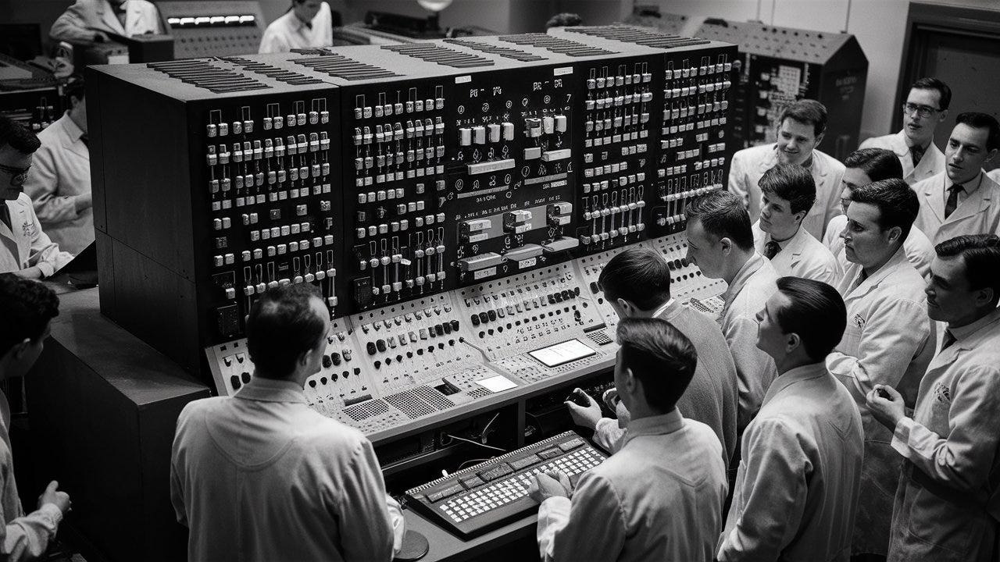
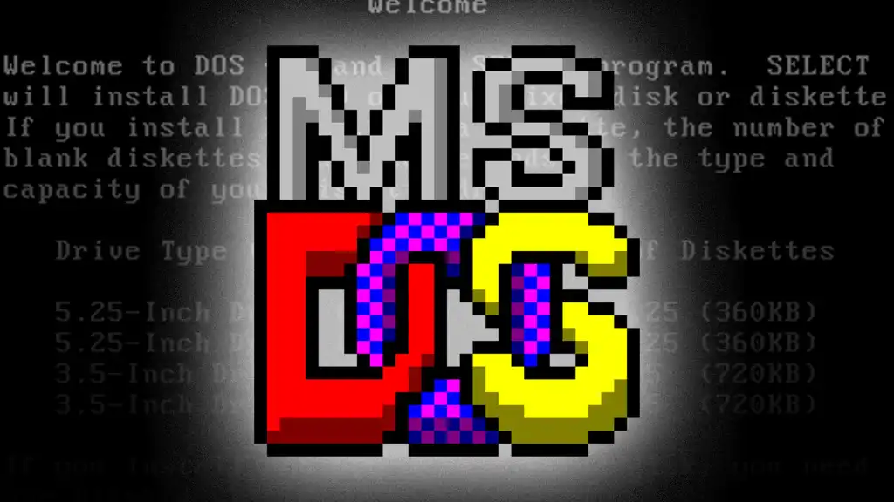
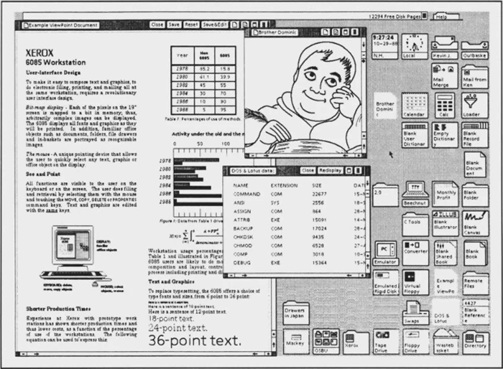
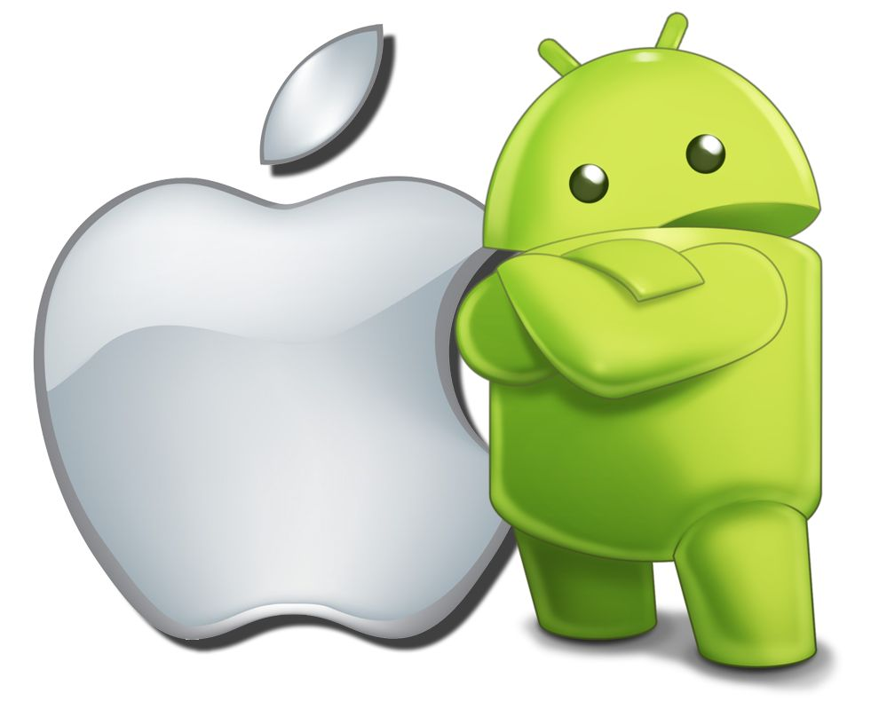

Evolución de los Sistemas Operativos

1956 - Primer Sistema Operativo
En 1956 se desarrolló uno de los primeros sistemas operativos para computadoras centrales (mainframes). Permitía automatizar la ejecución de programas y mejorar la administración del hardware.
1969 - Nace UNIX
UNIX fue desarrollado en los laboratorios Bell. Introdujo un diseño modular y multitarea que influyó profundamente en los sistemas operativos modernos.
1974 - UNIX reescrito en C
UNIX fue reescrito en el lenguaje C, lo que permitió su portabilidad a diferentes tipos de hardware y facilitó su expansión.

1981 - MS-DOS y Computadoras Personales
Con la llegada de las computadoras personales, MS-DOS se convirtió en uno de los sistemas operativos más utilizados, funcionando mediante línea de comandos.

1985 - Interfaces Gráficas
Se popularizan las interfaces gráficas de usuario (GUI), permitiendo interactuar mediante ventanas, iconos y mouse, facilitando el uso para personas no técnicas.
1991 - Nace Linux
Linux surge como un sistema operativo de código abierto, inspirado en UNIX. Se convirtió en una base fundamental para servidores y sistemas modernos.

2007 - Sistemas Operativos Móviles
Con la aparición de smartphones modernos, los sistemas operativos móviles revolucionaron la tecnología, integrando aplicaciones, conectividad y experiencia táctil.
2020 - Actualidad: Nube e Inteligencia Artificial
Actualmente los sistemas operativos integran computación en la nube, virtualización y herramientas de inteligencia artificial, mejorando la automatización y el análisis de datos.